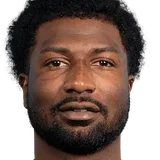

His best final NBA finish was #4 of 30, with the 2013-14 Indiana Pacers. In his 218 games for 5 teams over 5 seasons they went 82–136 (37.6%), −54 games under .500, with an average final finish of 21.2.
Jump to: Record by opponent · Season by season · Teammate help
Compare Donald Sloan with…
Final NBA finish, season by season
Title Finals Other playoffs Missed playoffs. #1 = champion; the dashed line is last place that season. Each point opens that season's final standings.
All 30 teams ranked in 2013-14, his best finish (#4)Teammate help
 Paul George4.01 season
Paul George4.01 season Kyrie Irving1.82 seasons
Kyrie Irving1.82 seasons Roy Hibbert1.51 season
Roy Hibbert1.51 season
Career
Career records (W–L, W − L, with and without) include 2026-27 games through Nov. 22, 2026; season counts and finishes are through 2025-26. Each card opens its board in the same scope. How we count.

With and without his teammates
His 12 teammates with the most regular-season games together. "Together" is the team's record in the games both played for it; "Without him" is the team's record in the games Donald Sloan played for that team while the teammate was on it (between the teammate's first and last game for the team, the appearance span) and the teammate did not play. Fewer than 20 games without him: no gap. Games through Nov. 22, 2026. How we count.
 Luis Scola
Luis Scola Indiana 2013-14 to 2014-15
Indiana 2013-14 to 2014-15- Together
- 53–48 52.5%
- Without him
- N/A N/A
- Gap
- Too few games without him
- Roy HibbertIndiana 2013-14 to 2014-15
- Together
- 49–46 51.6%
- Without him
- 4–2 66.7%
- Gap
- Too few games without him
 Ian MahinmiIndiana 2013-14 to 2014-15
Ian MahinmiIndiana 2013-14 to 2014-15- Together
- 46–40 53.5%
- Without him
- 6–8 42.9%
- Gap
- Too few games without him
 David WestIndiana 2013-14 to 2014-15
David WestIndiana 2013-14 to 2014-15- Together
- 45–39 53.6%
- Without him
- 1–0 100.0%
- Gap
- Too few games without him
 Chris CopelandIndiana 2013-14 to 2014-15
Chris CopelandIndiana 2013-14 to 2014-15- Together
- 39–42 48.1%
- Without him
- 10–5 66.7%
- Gap
- Too few games without him

Solomon HillIndiana 2013-14 to 2014-15- Together
- 33–40 45.2%
- Without him
- 20–8 71.4%
- Gap
- 26.2 points higher
 Lavoy AllenIndiana 2013-14 to 2014-15
Lavoy AllenIndiana 2013-14 to 2014-15- Together
- 24–37 39.3%
- Without him
- 8–6 57.1%
- Gap
- Too few games without him
 George HillIndiana 2013-14 to 2014-15
George HillIndiana 2013-14 to 2014-15- Together
- 35–24 59.3%
- Without him
- 9–8 52.9%
- Gap
- Too few games without him

- Together
- 19–40 32.2%
- Without him
- 6–8 42.9%
- Gap
- Too few games without him
 Bojan Bogdanovic
Bojan Bogdanovic Brooklyn 2015-16
Brooklyn 2015-16- Together
- 13–46 22.0%
- Without him
- 0–2 0.0%
- Gap
- Too few games without him

- Together
- 33–25 56.9%
- Without him
- 8–13 38.1%
- Gap
- 18.8 points lower
 Shane LarkinBrooklyn 2015-16
Shane LarkinBrooklyn 2015-16- Together
- 12–45 21.1%
- Without him
- 1–3 25.0%
- Gap
- Too few games without him
Latest completed seasons
Season by season
Newest first; every header sorts. Final NBA finish is the team's rank among all teams that season (#1 = champion) and opens that season's standings. "Without him" uses the team-season window; the span line counts only the games between his first and last game for the team.
| 2015-16 | #28 of 30 | 21–61 25.6% | Missed playoffs | 61 of 82 | 13–48 21.3% | 8–13 38.1%span: 8–13, gap −16.8 | −16.8 | |
| 2014-15 | #19 of 30 | 38–44 46.3% | Missed playoffs | 53 of 82 | 22–31 41.5% | 16–13 55.2%span: 16–13, gap −13.7 | −13.7 | |
| 2013-14 | #4 of 30 | 56–26 68.3% | Lost conf finals 2–4 | 48 of 82 | 31–17 64.6% | 25–9 73.5%span: 23–9, gap −7.3 | −8.9 | |
| 2012-13 | #28 of 30 | 24–58 29.3% | Missed playoffs | 20 of 82 | 3–17 15.0% | 5–10 33.3%span: 2–5, gap −13.6 | −18.3 | |
| 2012-13 | #26 of 30 | 27–55 32.9% | Missed playoffs | 3 of 82 | 3–0 100.0% | 19–35 35.2%span: 2–1, gap +33.3 | +64.8 | |
| 2011-12 | #11 of 30 | 40–26 60.6% | Lost 1st round 2–4 | 5 of 66 | 3–2 60.0% | 14–7 66.7%span: 2–0, gap −40.0 | −6.7 | |
| 2011-12 | #27 of 30 | 21–45 31.8% | Missed playoffs | 3 of 66 | 2–1 66.7% | 6–20 23.1%span: N/A, gap N/A | +43.6 | |
| 2011-12 | #27 of 30 | 21–45 31.8% | Missed playoffs | 25 of 66 | 5–20 20.0% | 5–9 35.7%span: N/A, gap N/A | −15.7 |
On/off, starts and close games
From the lineup data, 1996-97 on. On/off is net points per 100 possessions with him on the floor minus off, a different unit from the win-rate gaps. Started and off the bench are team records in those games; close games are those within 5 points in the last 5 minutes with him on the floor.
| 2015-16 | +8.1 | 9–24 27.3% | 4–24 14.3% | 5–13 27.8% | |
| 2014-15 | −5.0 | 8–13 38.1% | 14–18 43.8% | 9–10 47.4% | |
| 2013-14 | −20.9 | 1–0 100.0% | 30–17 63.8% | 2–1 66.7% | |
| 2012-13 | −5.9 | N/A | 3–17 15.0% | 0–1 0.0% | |
| 2012-13 | −77.2 | N/A | 3–0 100.0% | N/A | |
| 2011-12 | +38.1 | N/A | 3–2 60.0% | N/A | |
| 2011-12 | +5.7 | N/A | 2–1 66.7% | N/A | |
| 2011-12 | −17.3 | 3–8 27.3% | 2–12 14.3% | 1–3 25.0% |
Teammate help by season
Two separate numbers per season, each with every teammate that adds to it. Help this season = Teammates Score points for honors won that season by teammates who shared a game with him. Help coming in = the same teammates' honors from the season before. How help works.
- 2015-16BrooklynHelp this season: 0, no honored teammate
More: help coming in
Help coming in (teammates' honors the season before): 0.125 = 0.125 Bojan Bogdanovic
- 2014-15IndianaHelp this season: 0, no honored teammate
More: help coming in
Help coming in (teammates' honors the season before): 5.5 = 4 Paul George + 1.5 Roy Hibbert
- 2013-14Indiana
Paul George All-NBA 3rdAll-StarAll-Def 1st446 gRoy Hibbert All-StarAll-Def 2nd1.547 g
Help this season: 5.5 = 4 Paul George + 1.5 Roy Hibbert
More: help coming in and other teammates
Help coming in (teammates' honors the season before): 3.75 = 3.75 Paul George
Other teammates (no honors that season): Luis Scola 48 g, David West 46 g, Lance Stephenson 46 g, Ian Mahinmi 46 g, George Hill 42 g, Chris Copeland 38 g, Rasual Butler 37 g, CJ Watson 30 g, Orlando Johnson 23 g, Evan Turner 22 g, Solomon Hill 20 g, Danny Granger 16 g, Lavoy Allen 13 g, Andrew Bynum 1 g
- 2012-13
 Cleveland
Kyrie Irving All-Star113 g
Cleveland
Kyrie Irving All-Star113 g Dion Waiters All-Rookie 1st0.2513 g
Dion Waiters All-Rookie 1st0.2513 g Tyler Zeller All-Rookie 2nd0.12516 g
Tyler Zeller All-Rookie 2nd0.12516 g
Help this season: 1.375 = 1 Kyrie Irving + 0.25 Dion Waiters + 0.125 Tyler Zeller
More: help coming in and other teammates
Help coming in (teammates' honors the season before): 0.875 = 0.75 Kyrie Irving + 0.125 Tristan Thompson
Other teammates (no honors that season): Tristan Thompson 20 g, Alonzo Gee 20 g, Anderson Varejao 18 g, Daniel Gibson 18 g, CJ Miles 16 g, Samardo Samuels 14 g, Omri Casspi 11 g, Luke Walton 9 g, Jeremy Pargo 9 g, Kevin Jones 5 g, Jon Leuer 5 g
- 2012-13
 New Orleans
New Orleans
 Anthony Davis All-Rookie 1st0.253 g
Anthony Davis All-Rookie 1st0.253 g
Help this season: 0.25 = 0.25 Anthony Davis
More: help coming in and other teammates
Help coming in (teammates' honors the season before): 0.25 = 0.25 Ryan Anderson
Other teammates (no honors that season): Brian Roberts 3 g, Austin Rivers 3 g, Lance Thomas 3 g, Greivis Vasquez 3 g, Al-Farouq Aminu 3 g, Ryan Anderson 3 g, Robin Lopez 3 g, Jason Smith 3 g, Roger Mason 2 g, Xavier Henry 2 g, Eric Gordon 2 g
- 2011-12
 Atlanta
Atlanta
 Joe Johnson All-Star15 g
Joe Johnson All-Star15 g
Help this season: 1 = 1 Joe Johnson
More: help coming in and other teammates
Help coming in (teammates' honors the season before): 4 = 3 Al Horford + 1 Joe Johnson
Other teammates (no honors that season): Josh Smith 5 g, Zaza Pachulia 5 g, Willie Green 5 g, Jannero Pargo 5 g, Jason Collins 5 g, Vladimir Radmanovic 5 g, Jeff Teague 5 g, Ivan Johnson 5 g, Jerry Stackhouse 4 g, Marvin Williams 3 g, Tracy McGrady 2 g, Al Horford 1 g
- 2011-12New OrleansHelp this season: 0, no honored teammate
- 2011-12Cleveland
Kyrie Irving ROYAll-Rookie 1st0.7514 g
 Tristan Thompson All-Rookie 2nd0.12525 g
Tristan Thompson All-Rookie 2nd0.12525 g
Help this season: 0.875 = 0.75 Kyrie Irving + 0.125 Tristan Thompson
More: help coming in and other teammates
Help coming in (teammates' honors the season before): 0
Other teammates (no honors that season): Samardo Samuels 25 g, Omri Casspi 24 g, Antawn Jamison 24 g, Manny Harris 23 g, Anthony Parker 23 g, Alonzo Gee 22 g, Luke Walton 21 g, Lester Hudson 13 g, Semih Erden 7 g, Luke Harangody 6 g, DJ Kennedy 2 g, Daniel Gibson 2 g
Record against each opponent
Regular season, through 2025-26 (2026-27 games not included): 218 games, 82–136, against 30 franchises.
Grouped by franchise (named as today); game lists keep each team's name that season. Filters and the tab are kept in the URL, so a filtered view can be shared.
| Games list | |||||||
|---|---|---|---|---|---|---|---|
| 12 | 3–9 | 25.0% | −6 | N/A | 2011-12 to 2015-16 | ||
| 12 | 5–7 | 41.7% | −2 | 1–0 (0–1 in games) | 2011-12 to 2015-16 | ||
| 11 | 4–7 | 36.4% | −3 | N/A | 2011-12 to 2015-16 | ||
| 11 | 6–5 | 54.5% | +1 | N/A | 2011-12 to 2015-16 | ||
| 11 | 1–10 | 9.1% | −9 | N/A | 2011-12 to 2015-16 | ||
| 10 | 7–3 | 70.0% | +4 | N/A | 2012-13 to 2015-16 | ||
| 10 | 5–5 | 50.0% | 0 | N/A | 2011-12 to 2015-16 | ||
| 10 | 4–6 | 40.0% | −2 | N/A | 2011-12 to 2015-16 | ||
| 10 | 4–6 | 40.0% | −2 | N/A | 2011-12 to 2015-16 | ||
| 9 | 2–7 | 22.2% | −5 | 1–0 (1–0 in games) | 2011-12 to 2015-16 | ||
| 9 | 4–5 | 44.4% | −1 | N/A | 2011-12 to 2015-16 | ||
| 8 | 4–4 | 50.0% | 0 | N/A | 2011-12 to 2015-16 | ||
| 8 | 1–7 | 12.5% | −6 | N/A | 2011-12 to 2015-16 | ||
| 8 | 3–5 | 37.5% | −2 | 0–1 (1–1 in games) | 2013-14 to 2015-16 | ||
| 8 | 3–5 | 37.5% | −2 | N/A | 2011-12 to 2015-16 | ||
| 8 | 2–6 | 25.0% | −4 | N/A | 2011-12 to 2015-16 | ||
| 7 | 1–6 | 14.3% | −5 | N/A | 2011-12 to 2015-16 | ||
| 6 | 3–3 | 50.0% | 0 | N/A | 2013-14 to 2015-16 | ||
| 6 | 1–5 | 16.7% | −4 | N/A | 2011-12 to 2015-16 | ||
| 6 | 5–1 | 83.3% | +4 | N/A | 2011-12 to 2015-16 | ||
| 5 | 2–3 | 40.0% | −1 | N/A | 2012-13 to 2015-16 | ||
| 5 | 2–3 | 40.0% | −1 | N/A | 2012-13 to 2015-16 | ||
| 5 | 0–5 | 0.0% | −5 | N/A | 2011-12 to 2015-16 | ||
| 4 | 2–2 | 50.0% | 0 | N/A | 2011-12 to 2013-14 | ||
| 4 | 1–3 | 25.0% | −2 | N/A | 2013-14 to 2015-16 | ||
| 4 | 2–2 | 50.0% | 0 | N/A | 2013-14 to 2015-16 | ||
| 3 | 0–3 | 0.0% | −3 | N/A | 2012-13 to 2015-16 | ||
| 3 | 1–2 | 33.3% | −1 | N/A | 2013-14 to 2014-15 | ||
| 3 | 2–1 | 66.7% | +1 | N/A | 2013-14 to 2015-16 | ||
| 2 | 2–0 | 100.0% | +2 | N/A | 2013-14 to 2015-16 |
Rows add up to his career record in his games. A playoff series counts when he played in it; early round-robin games show as games only. How we count.
Playoffs, with and without him
Arrival and departure
Team wins per 82 games the season before he arrived vs his first season there, and his last season vs the season after he left. He leaves a team only when his next season with games is for another team (or he never plays again); whole seasons he missed and came back from are one "Missed" row with the team's record without him. Per 82 so short seasons compare fairly. These are team records, not a measure of what he did.
| Left | after 2015-16 | 2015-16: 21–61 21.0 per 82 | 2016-17: 20–62 20.0 per 82 without him | −1.0 wins | |
| Arrived | 2015-16 | 2014-15: 38–44 38.0 per 82 | 2015-16: 21–61 21.0 per 82 | −17.0 wins | |
| Left | after 2014-15 | 2014-15: 38–44 38.0 per 82 | 2015-16: 45–37 45.0 per 82 without him | +7.0 wins | |
| Arrived | 2013-14 | 2012-13: 49–32 49.6 per 82 | 2013-14: 56–26 56.0 per 82 | +6.4 wins | |
| Left | after 2012-13 | 2012-13: 24–58 24.0 per 82 | 2013-14: 33–49 33.0 per 82 without him | +9.0 wins | |
| Left | after 2012-13 | 2012-13: 27–55 27.0 per 82 | 2013-14: 34–48 34.0 per 82 without him | +7.0 wins | |
| Left | after 2011-12 | 2011-12: 40–26 49.7 per 82 | 2012-13: 44–38 44.0 per 82 without him | −5.7 wins | |
| Debut | 2011-12 | 2010-11: 44–38 44.0 per 82 | 2011-12: 40–26 49.7 per 82 | +5.7 wins | |
| Arrived | 2011-12 | 2010-11: 46–36 46.0 per 82 | 2011-12: 21–45 26.1 per 82 | −19.9 wins | |
| Arrived | 2011-12 | 2010-11: 19–63 19.0 per 82 | 2011-12: 21–45 26.1 per 82 | +7.1 wins |
Seasons split between teams
Each team's record before his first game for it, inside his window (games with and without him) and after his last game, in the seasons he played for two or more teams.
| 2012-13 | Oct. 30, 2012 to Dec. 19, 2012 | N/A | 8–27 22.9% | 16–31 34.0% | 20 | |
| 2012-13 | Jan. 7, 2013 to Jan. 16, 2013 | 5–20 20.0% | 22–35 38.6% | N/A | 3 | |
| 2011-12 | Jan. 11, 2012 to Jan. 21, 2012 | N/A | 17–9 65.4% | 23–17 57.5% | 5 | |
| 2011-12 | Feb. 10, 2012 to Feb. 15, 2012 | 3–13 18.8% | 8–21 27.6% | 10–11 47.6% | 3 | |
| 2011-12 | March 18, 2012 to April 26, 2012 | 11–16 40.7% | 10–29 25.6% | N/A | 25 |
Best duos
Team record in regular-season games both played, top 10 by win %, at least 50 games together.
- Paul George
34–18 65.4%
- George Hill
35–24 59.3%
- CJ Watson
33–25 56.9%
- David West
45–39 53.6%
- Ian Mahinmi
46–40 53.5%
- Luis Scola
53–48 52.5%
- Roy Hibbert
49–46 51.6%
- Chris Copeland
39–42 48.1%
- Solomon Hill 33–40 45.2%
- Lavoy Allen
24–37 39.3%